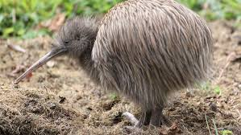
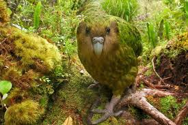
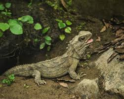
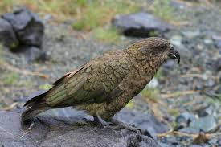
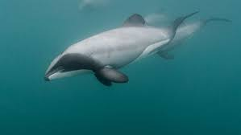
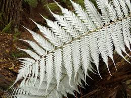
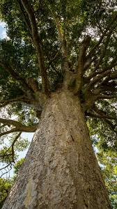
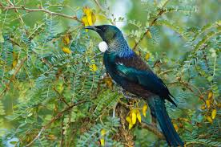

Kiwi

The kiwi is New Zealand's national bird. It is a flightless, nocturnal bird with a long beak used to search for insects and worms in the forest floor.
Kākāpō

The kākāpō is a rare, flightless parrot found only in New Zealand. Conservation programmes have helped protect this critically endangered species from extinction.
Tuatara

Although it looks like a lizard, the tuatara belongs to its own ancient group of reptiles. Its ancestors lived alongside the dinosaurs.
Kea

The kea is the world's only alpine parrot. Known for its intelligence and curiosity, it often investigates backpacks, cars and anything humans leave unattended.
Hector's Dolphin

Hector's dolphin is one of the world's smallest dolphins and lives only in the coastal waters of New Zealand. It is recognised by its rounded dorsal fin.
Silver Fern

The silver fern is one of New Zealand's best-known native plants. It has become a national symbol and is used by many sports teams and organisations.
Kauri Tree

Kauri trees are among the largest and oldest trees in the world. Some are over 1,500 years old and play an important role in Māori culture and New Zealand's forests.
Tūī

The tūī is famous for its beautiful song and ability to mimic sounds. Its iridescent feathers and white throat tuft make it one of New Zealand's most recognisable native birds.